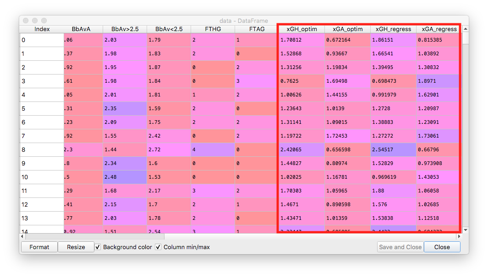
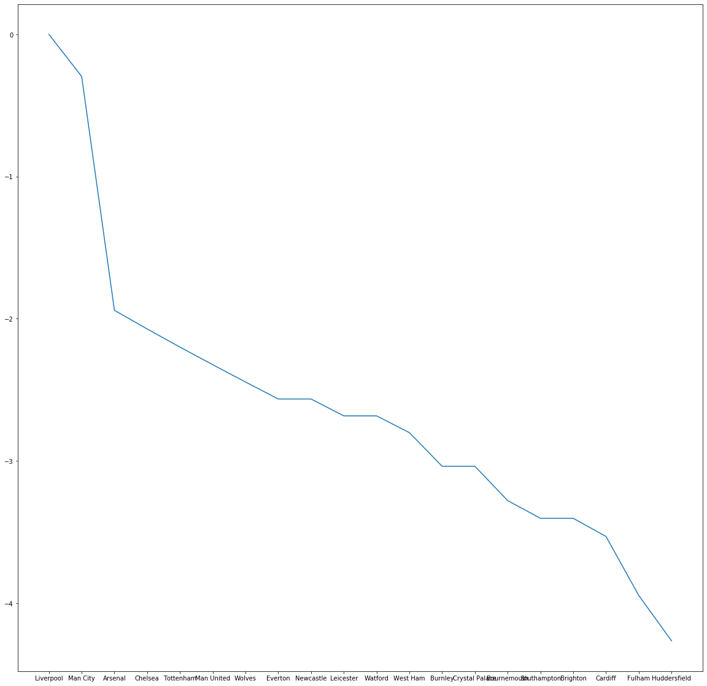
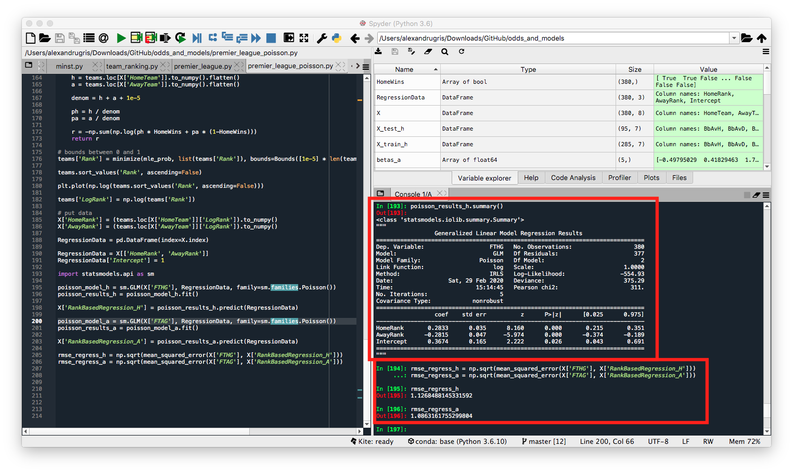
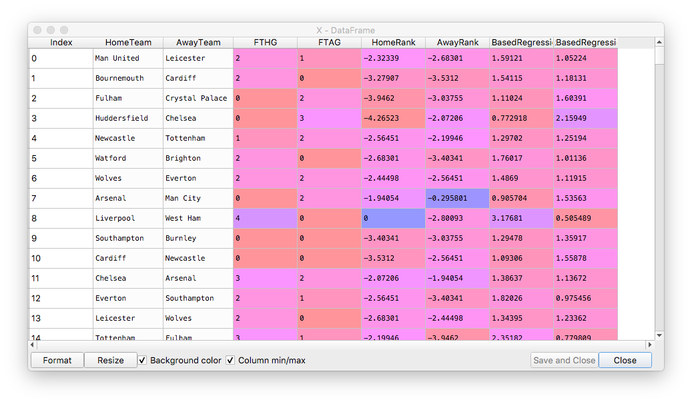
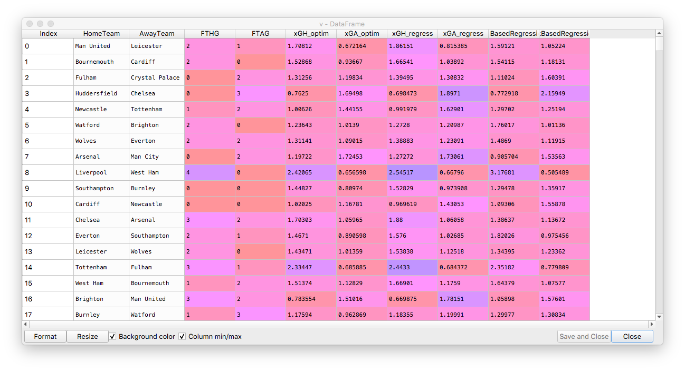

Reverse Engineering Expected Goals
In this post we are going to look again at the 2018-2019 Premier League season and try to reverse engineer bookmakers odds in order to obtain the expected goals for each match. Then, we are going to try to improve on these models and reduce our reliance on bookmakers odds. In the process, I will present two ways of implementing the Poisson regression in Python - one from scratch and one based on the the statsmodel library.
The expected goals is a very important number for compiling odds because, if plugged into the Poisson distribution, it gives is the possibility to compute any goal-based markets.
We are going to use publicly available data, downloaded from here. In case the link disappears, here is a local copy of the csv file used for this analysis. The explanation for the columns can be found here
Reverse Engineering Expected Goals Using Direct Optimization
We are looking independently at each line, the match odds for home-draw-away and over-under, and optimize the mean squared error loss function for each match. We are going to consider the match goals as Poisson distributed.
import pandas as pd
import numpy as np
from scipy.stats import poisson
from scipy.optimize import minimize
from sklearn.model_selection import train_test_split
# https://datahub.io/sports-data/english-premier-league#readme
data = pd.read_csv("season-1819_csv.csv") # todo: add index on team names!
rows = len(data)
teams = int(np.sqrt(rows)) + 1
###
# BbAvH = Betbrain average home win odds
# BbAvD = Betbrain average draw win odds
# BbAvA = Betbrain average away win odds
# BbAv>2.5 = Betbrain average over 2.5 goals
# BbAv<2.5 = Betbrain average under 2.5 goals
# FTHG and HG = Full Time Home Team Goals
# FTAG and AG = Full Time Away Team Goals
###
data = data[['HomeTeam', 'AwayTeam','BbAvH', 'BbAvD', 'BbAvA', 'BbAv>2.5', 'BbAv<2.5', 'FTHG', 'FTAG']]
### xG reverse engineering
def hda_ou25(xGH, xGA):
h_distrib = np.array([poisson.pmf(x, xGH) for x in range(0, 10)])
a_distrib = np.array([poisson.pmf(x, xGA) for x in range(0, 10)])
ret = [0, 0, 0, 0, 0]
for i in range (0, len(h_distrib)):
for j in range (0, len(a_distrib)):
p = h_distrib[i] * a_distrib[j]
# hda part
if i > j:
ret[0] += p
elif i == j:
ret[1] += p
elif i < j:
ret[2] += p
# ou 2.5 part
if i + j > 2.5:
ret[3] += p
elif i + j < 2.5:
ret[4] += p
return 1/np.array(ret)
def loss_hdaou(xG,hda_ou_target):
v = hda_ou25(xG[0], xG[1]) - hda_ou_target
return np.dot(v, v) # square the error
def compute_xg(row):
hda_ou_target = np.array([row[c] for c in ['BbAvH', 'BbAvD', 'BbAvA', 'BbAv>2.5', 'BbAv<2.5']]).flatten()
ret = minimize(loss_hdaou, [1.25, 1.25], args=(hda_ou_target), method='COBYLA').x
return pd.Series(ret, index=['xGH', 'xGA'])
xg = data.apply(compute_xg, axis=1)
data['xGH_optim'] = xg['xGH']
data['xGA_optim'] = xg['xGA']
Reverse Engineering Expected Goals From Bookmakers Odds Using The Poisson Regression
The next step is to do exactly the same thing, but this time using Poisson regression. Poisson regression is very useful for things like counts. It aims to compute a set of regression coefficients such that lambda = sum(regression_coef_i * predictor_variable_i). Poisson regression is solved through the Maximum Likelihood Estimate method, as shown below:
# poisson regression:
def poisson_compute_xg(betas, factors, goals):
# compute the lambda for each row based on the proposed betas
lmbdas = np.dot(betas, factors.T)
if(np.min(lmbdas) <= 0e-5):
print("violated constraint")
return 1e10
# compute the probability for obtaining the observed counts (goals)
# given the lambda
psn = [poisson.pmf(g, l) for (g,l) in zip(goals, lmbdas)]
# return the MLE sum of logarithms
return -np.sum(np.log(psn))
def poisson_regress(X, y):
factors = X.to_numpy()
# start with 1 for all factors
betas = [1] * factors.shape[1]
# MLE
return minimize(poisson_compute_xg, betas, args=(factors, y), method='cobyla').x
# transform from odds to probabilities to get a better regression
X = 1/data[['BbAvH', 'BbAvD', 'BbAvA', 'BbAv>2.5', 'BbAv<2.5']]
y_h = data['FTHG']
y_a = data['FTAG']
betas_h = poisson_regress(X, y_h)
betas_a = poisson_regress(X, y_a)
data['xGH_regress'] = np.dot(X, betas_h)
data['xGA_regress'] = np.dot(X, betas_a)
The results for the two methods are highlighted in the dataframe below:

Now let's look at the RMSE for the two methods. For in-sample RMSE we obtain lower RMSE for the Poisson regression. However, the difference is very small:
rmse_optim = np.sqrt(np.sum((data['FTHG'] - data['xGH_optim']) ** 2 + (data['FTAG'] - data['xGA_optim']) ** 2) / len(data))
rmse_regress = np.sqrt(np.sum((data['FTHG'] - data['xGH_regress']) ** 2 + (data['FTAG'] - data['xGA_regress']) ** 2) / len(data))
rmse_optim
Out[190]: 1.5902709407482063
rmse_regress
Out[191]: 1.5836188549138615
For out-of-sample RMSE, we usually have lower RMSE for Poisson regression, but this is not always the case. Again, the difference is small and we can consider the two methods roughly equivalent.
X['xGH_optim'] = data['xGH_optim']
X['FTHG'] = data['FTHG']
X_train_h, X_test_h, y_train_h, y_test_h = train_test_split(X, y_h)
betas_h = poisson_regress(X_train_h[['BbAvH', 'BbAvD', 'BbAvA', 'BbAv>2.5', 'BbAv<2.5']], y_train_h)
result = np.dot(X_test_h[['BbAvH', 'BbAvD', 'BbAvA', 'BbAv>2.5', 'BbAv<2.5']], betas_h)
from sklearn.metrics import mean_squared_error
rmse_optim = np.sqrt(mean_squared_error(X_test_h['FTHG'], X_test_h['xGH_optim']))
rmse_regress = np.sqrt(mean_squared_error(X_test_h['FTHG'], result))
rmse_optim
Out[196]: 1.162618442066351
rmse_regress
Out[197]: 1.1526039105430579
Computing the Expected Goals Using Team Ranking
In Odds And Models, we used a factor-based system for determining the expected goals. In this post we will take a different approach and create a team rank based model for the same thing. We will start with a basic model, lambda = b0 + b1 * home_team_rank + b2 * away_team_rank. Out of laziness, I will only do the in-sample analysis which has the potential to skew the results quite heavily.
For ranking the teams, we are going to use the power function and define the probability of one team winning as p(x>y) = x / (x+y) = rank(t1) / (rank(t1) + rank(t2)), where the ranks for each team are the variables we want to compute using MLE.
For encoding the result of the winning team I tried two different definitions:
- HomeWins = (X['FTHG'] > X['FTAG']).to_numpy().flatten() - simply assigns 1 to the variable if the home team wins or draws, to count for the home field advantage.
- HomeWins = np.clip(zscore((X['FTHG'] - X['FTAG']).to_numpy()), -0.5, 0.5) + 0.5 - spreads a little bit the unclear wins while taking into account the home team advantage (zscore will normalize for home team advantage).
I was surprised to observe that the second function produces more extreme results for the ranking, so we will keep the first definition of a win for this exercise.
# starting with fresh data
data = pd.read_csv("season-1819_csv.csv")
# only keep in our dataframe the interesting variables
X = data[['HomeTeam', 'AwayTeam', 'FTHG', 'FTAG']]
# power_function
# p(x>y) = x / (x+y) = rank(t1) / (rank(t1) + rank(t2))
# make sure we don't miss any team names
teams = X['HomeTeam'].combine_first(X['AwayTeam']).unique()
teams = pd.DataFrame(index=teams)
# initialize the team ranks
teams['Rank'] = 0.5
# give an advantage to the away
HomeWins = (X['FTHG'] > X['FTAG']).to_numpy().flatten()
#HomeWins = np.clip(zscore((X['FTHG'] - X['FTAG']).to_numpy()), -0.5, 0.5) + 0.5
def mle_prob(ranks):
teams['Rank'] = ranks
h = teams.loc[X['HomeTeam']].to_numpy().flatten()
a = teams.loc[X['AwayTeam']].to_numpy().flatten()
denom = h + a + 1e-5
ph = h / denom
pa = a / denom
r = -np.sum(np.log(ph * HomeWins + pa * (1-HomeWins)))
return r
# bounds between 0 and 1
teams['Rank'] = minimize(mle_prob, list(teams['Rank']), bounds=Bounds([1e-5] * len(teams), [1] * len(teams))).x
teams.sort_values('Rank', ascending=False)
teams['LogRank'] = np.log(teams['Rank'])
The results for our ranks are as follows:
teams.sort_values('Rank', ascending=False)
Out[183]:
Rank LogRank
Liverpool 1.000000 0.000000
Man City 0.743936 -0.295801
Arsenal 0.143627 -1.940538
Chelsea 0.125926 -2.072060
Tottenham 0.110863 -2.199463
Man United 0.097941 -2.323390
Wolves 0.086728 -2.444978
Everton 0.076957 -2.564509
Newcastle 0.076957 -2.564509
Leicester 0.068357 -2.683007
Watford 0.068357 -2.683007
West Ham 0.060753 -2.800934
Burnley 0.047952 -3.037547
Crystal Palace 0.047952 -3.037547
Bournemouth 0.037663 -3.279067
Southampton 0.033260 -3.403410
Brighton 0.033260 -3.403410
Cardiff 0.029270 -3.531198
Fulham 0.019328 -3.946205
Huddersfield 0.014049 -4.265229
Since the obtained the rank values fall very quickly very fast, we logged them to get smoother results.

# put data
X['HomeRank'] = (teams.loc[X['HomeTeam']]['LogRank']).to_numpy()
X['AwayRank'] = (teams.loc[X['AwayTeam']]['LogRank']).to_numpy()
RegressionData = pd.DataFrame(index=X.index)
RegressionData = X[['HomeRank', 'AwayRank']]
RegressionData['Intercept'] = 1
For the next step we will do again a Poisson regression to get the expected goals lambda, but this time we will use the statsmodel.api package since we have already demonstrated above how Poisson regression works if we are to do it manually. We will predict for both home and away.
import statsmodels.api as sm
poisson_model_h = sm.GLM(X['FTHG'], RegressionData, family=sm.families.Poisson())
poisson_results_h = poisson_model_h.fit()
X['RankBasedRegression_H'] = poisson_results_h.predict(RegressionData)
poisson_model_a = sm.GLM(X['FTAG'], RegressionData, family=sm.families.Poisson())
poisson_results_a = poisson_model_a.fit()
X['RankBasedRegression_A'] = poisson_results_a.predict(RegressionData)
rmse_regress_h = np.sqrt(mean_squared_error(X['FTHG'], X['RankBasedRegression_H']))
rmse_regress_a = np.sqrt(mean_squared_error(X['FTAG'], X['RankBasedRegression_A']))
We can now observe the regression coefficients, the p-value for each coefficient showing that all features are relevant, as well as the RMSE for home and away expected goals vs real goals. The RMSE is better than the previous two models, but I expect this is due to the dataset as well as the in-sample regression test:

And below the full view of the regression parameters and expected goals:

Putting all 3 methods side by side, we can see that even this simple rank-based model, oblivious of bookmakers odds, has very good potential and it is worth improving further on.
